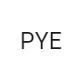

PYE is a tutoring center located in jackson heights. The place tutors for SHSAT, SAT, Hunter, and normal tutoring. I am currently interning at PYE. I teach at PYE for a STEM Program, Color in Milk. I also do work for their website and grade papers.

At all star code, I am taught technical coding skills and core business skills. I am taught how to code in mutliple languages while also being taught how to navigate the business skills. I learn an array of skills there, ranging from coding in javascript, to how to pitch an elevator pitch./p>